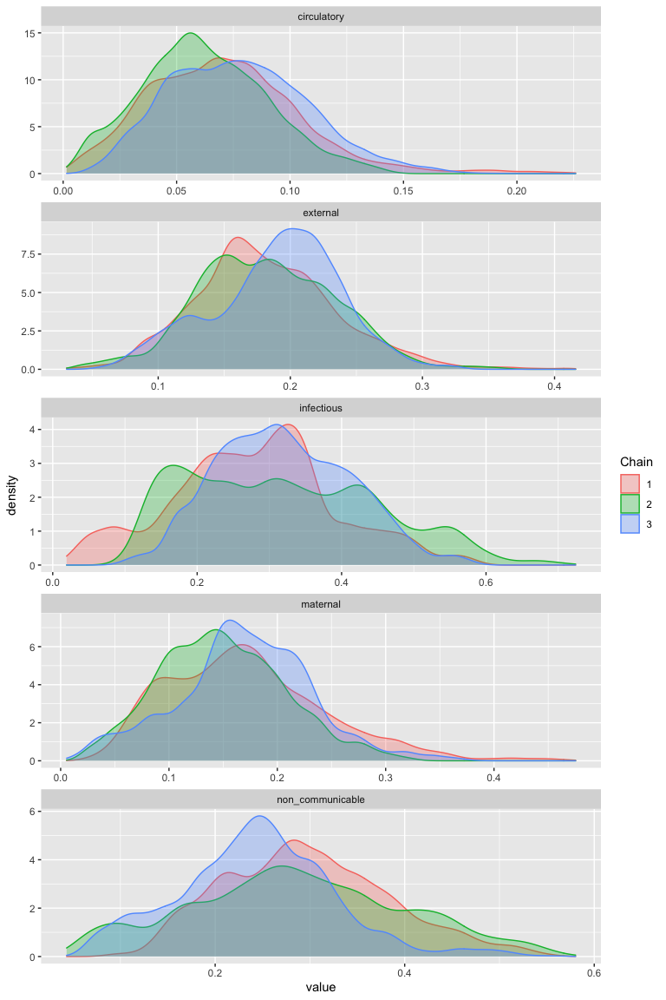

Installation
Before installation of CalibratedVA, we recommend first installing the latest version of LaplacesDemon from GitHub:
# install.packages("remotes") remotes::install_github("LaplacesDemonR/LaplacesDemon")
You can then install the development version of CalibratedVA from GitHub with:
# install.packages("remotes") remotes::install_github("jfiksel/CalibratedVA")
Getting started with CalibratedVA
PHMRC Data
The Population Health Metrics Research Consortium (PHMRC) study contains gold-standard cause-of-death (GS-COD) data for children, neonates and adults in 4 countries, making it a perfect dataset to demonstrate the merits of CalibratedVA.
We have used the openVA package to obtain cause-of-death predictions for adult deaths from Tanzania. Both InSilicoVA and Tariff were trained using deaths from the other 3 countries. We obtained individual cause probability predictions from InSilicoVA and individual top cause-of-death predictions from Tariff. We will also read in the GS-COD for each death from Tanzania.
There are 34 causes, which is too many causes for CalibratedVA to be useful. We will map these causes to broader causes, using the following cause map.
data("phmrc_adult_cause_map")
To map the causes, we can provide either the probability matrix:
insilico_tanzania <- map_causes(insilico_tanzania, phmrc_adult_cause_map)
Or the character vector with the predicted cause or GS-COD for each individual
tariff_tanzania <- map_causes(tariff_tanzania$cause, phmrc_adult_cause_map) gs_cod_tanzania <- map_causes(gs_cod_tanzania, phmrc_adult_cause_map)
Single algorithm predictions
We will first run CalibratedVA using the Tariff predictions. To run CalibratedVA, we will first select a set of individuals to be in our “hospital” set–that is, individuals for whom we know their GS-COD. These individuals will be used for estimation of algorithm misclassification rates. We will simply use the first 200 individuals from the data. We will use the default settings for all hyperparameter values.
causes <- colnames(tariff_tanzania) tariff_calibratedva <- calibratedva(va_unlabeled = tariff_tanzania[-(1:200),], va_labeled = tariff_tanzania[1:200,], gold_standard = gs_cod_tanzania[1:200,], causes = causes, nchains = 3, ndraws = 2000, burnin = 1000)
We can use the ggmcmc package to obtain CSMF estimates for the individual causes, along with credible intervals.
library(ggmcmc) P <- data.frame( Parameter=paste0("p[", 1:length(causes), "]"), Label=causes) tariff_csmf_samples <- ggs(tariff_calibratedva$samples, par_labels=P, family="p") #> Warning: `tbl_df()` is deprecated as of dplyr 1.0.0. #> Please use `tibble::as_tibble()` instead. #> This warning is displayed once every 8 hours. #> Call `lifecycle::last_warnings()` to see where this warning was generated. ### CSMF with credible intervals tariff_csmf <- tariff_csmf_samples %>% group_by(Parameter) %>% summarise(csmf = mean(value), ci_L = quantile(value, .025), ci_U = quantile(value, .975)) #> `summarise()` ungrouping output (override with `.groups` argument) tariff_csmf #> # A tibble: 5 x 4 #> Parameter csmf ci_L ci_U #> <fct> <dbl> <dbl> <dbl> #> 1 circulatory 0.122 0.0374 0.241 #> 2 external 0.137 0.0323 0.302 #> 3 infectious 0.301 0.0740 0.578 #> 4 maternal 0.187 0.0417 0.377 #> 5 non_communicable 0.253 0.0436 0.513
We can also view the traceplot
ggs_traceplot(tariff_csmf_samples)
And a posterior density plot
ggs_density(tariff_csmf_samples)

Using predictions from multiple algorithms (ensemble)
We can use both the predictions from both InSilicoVA and Tariff to better estimate the CSMF using the ensemble approach. We simply need to format the predictions into a list of matrices
ensemble_unlabeled <- list(tariff_tanzania[-(1:200),], insilico_tanzania[-(1:200),]) ensemble_labeled <- list(tariff_tanzania[1:200,], insilico_tanzania[1:200,])
ensemble_calibratedva <- calibratedva(va_unlabeled = ensemble_unlabeled, va_labeled = ensemble_labeled, gold_standard = gs_cod_tanzania[1:200,], causes = causes, nchains = 3, ndraws = 2000, burnin = 1000)
ensemble_csmf_samples <- ggs(ensemble_calibratedva$samples, par_labels=P, family="p") ### CSMF with credible intervals ensemble_csmf <- ensemble_csmf_samples %>% group_by(Parameter) %>% summarise(csmf = mean(value), ci_L = quantile(value, .025), ci_U = quantile(value, .975)) #> `summarise()` ungrouping output (override with `.groups` argument) ensemble_csmf #> # A tibble: 5 x 4 #> Parameter csmf ci_L ci_U #> <fct> <dbl> <dbl> <dbl> #> 1 circulatory 0.0703 0.0153 0.137 #> 2 external 0.185 0.0863 0.286 #> 3 infectious 0.306 0.0992 0.552 #> 4 maternal 0.163 0.0473 0.308 #> 5 non_communicable 0.276 0.0896 0.489
We can also view the traceplot
ggs_traceplot(ensemble_csmf_samples)

And a posterior density plot
ggs_density(ensemble_csmf_samples)

Additional features
Please view the “Get Started” tab to see additional features in CalibratedVA.